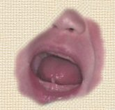
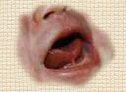

Ankyloglossia, short frenulum, otherwise known as”tongue-tie”, is an anatomic factor that can interfere with breastfeeding. The frenulum is the membrane that attaches the tongue to the floor of the mouth. Tongue-tie results when the membrane is shorter than usual.
Some babies with tongue-tie breastfeed effortlessly while others struggle. Babies with a short frenulum may have problems
latching on properly
, maintaining suction, and moving their tongues in the wavelike motions necessary for effective breastfeeding. Breast shape, nipple size, and elasticity of breast tissue can also affect the "tongue-tied" baby.
Tight frenulums can also contribute to speech impediments in children.
If the tongue-tie is hindering breastfeeding, it's possible to release the tongue by clipping the frenulum.
Indications that a short frenulum requires clipping are:

Inability to protrude the tongue past the gum line where the lower teeth would be located. During breastfeeding, the tongue does not protrude forward enough to make a tight seal on your nipple.
Your baby's mouth falls off the breast frequently.
Your baby is not
getting enough milk
, despite feeding many times per day.
You feel pain when your baby latches on (you may have cracked,
sore nipples
)
Your baby might not suck well on the breast (repeatedly breaks suction or makes clicking noises while nursing)
Your baby’s tongue curls under when crying, opening his mouth wide, or trying to suck
After clipping, many mothers find that latch-on is immediately more comfortable and baby is able to nurse more effectively. Some mothers and babies require a bit more effort getting a hang of latching on properly even after the procedure.
How clipping the short frenulum is done
Clipping a short frenulum is a quick and painless procedure. It can be done in your doctor's office. A newborn baby has a very thin frenulum that is easy to clip and usually bleeds very little or not at all. The doctor holds the tip of the tongue with a piece of gauze and uses scissors to clip the frenulum back to where it joins the base of the tongue.
If you feel that you are having breastfeeding problems due to your baby’s tongue-tie you can consult with your pediatrician.
The tongue clipping debate
Tongue clipping is a greatly disputed procedure among parents, physicians, lactation consultants, and speech pathologists. Some feel that the procedure is not done as frequently as necessary, and that children are required to wait until speech problems develop, before the frenulum is clipped. Some doctors are reluctant to do this procedure, because most tight tongues loosen with time and they may be uninformed about how a baby uses his tongue to get milk out of the breast. You can also refer to an oral surgeon, pediatric dentist, or ear, nose, and throat specialist about getting the baby's tongue clipped.
Sore nipples due to short frenulum?
![]()